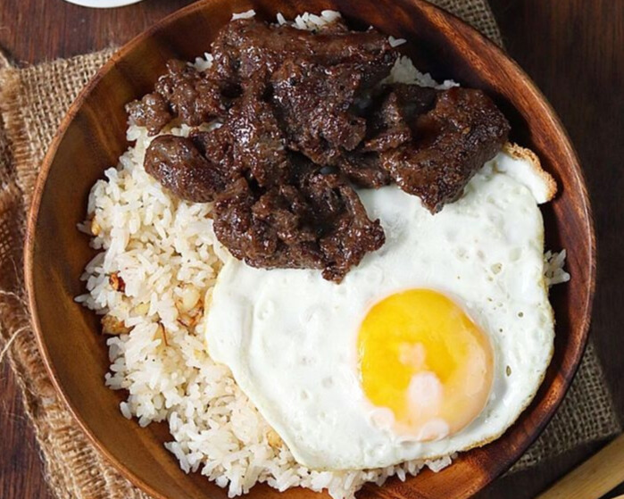
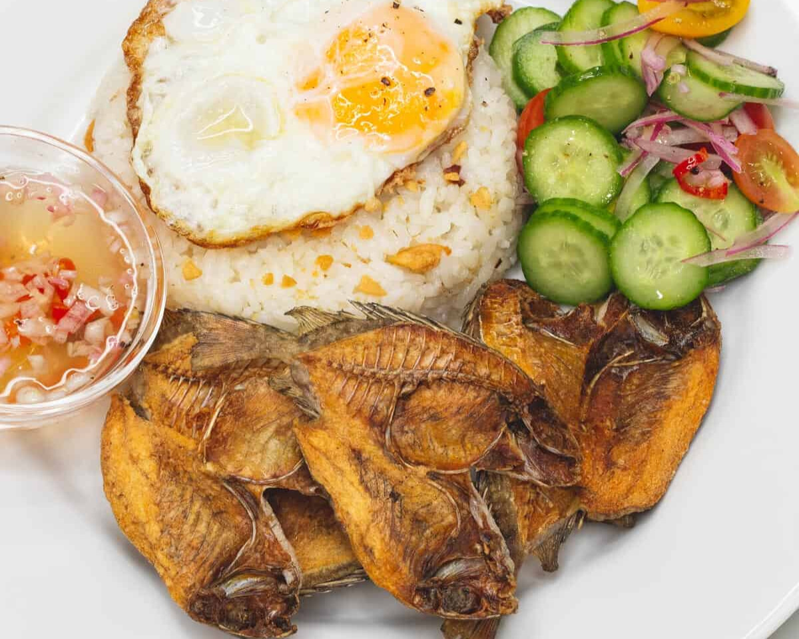
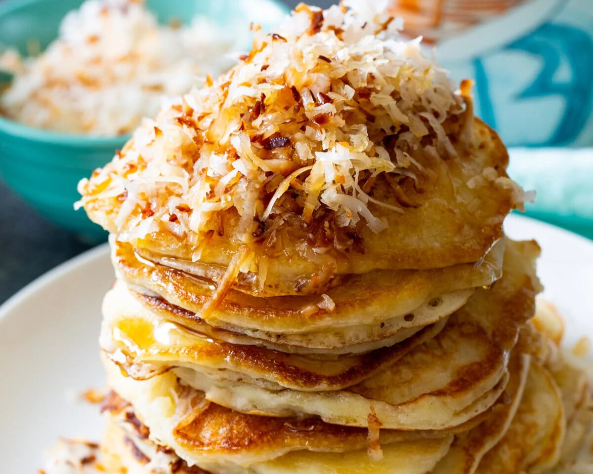
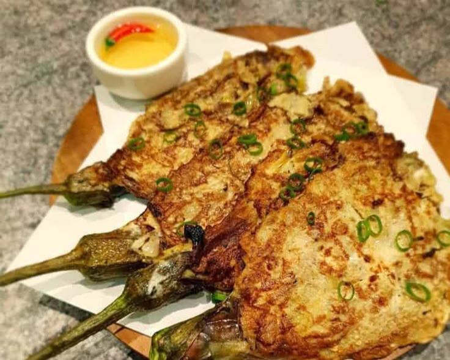
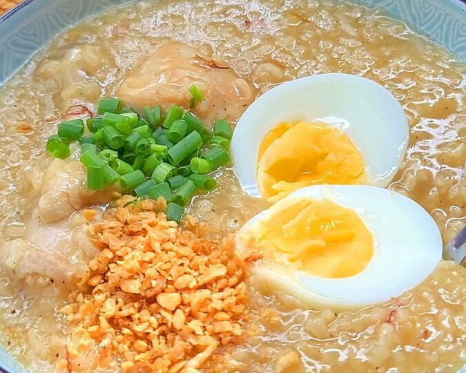
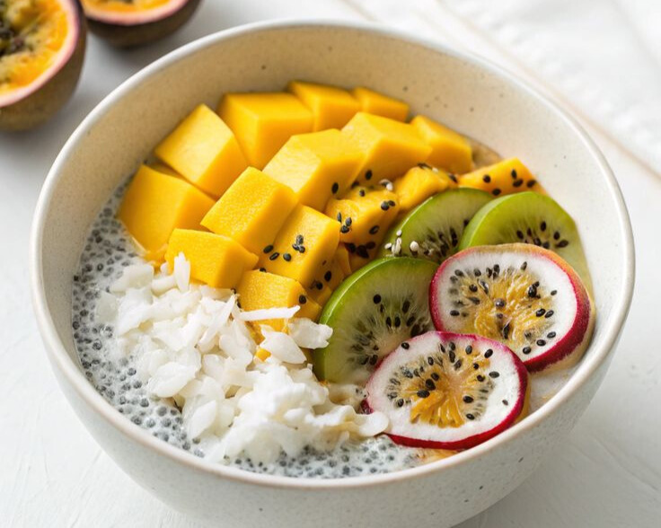
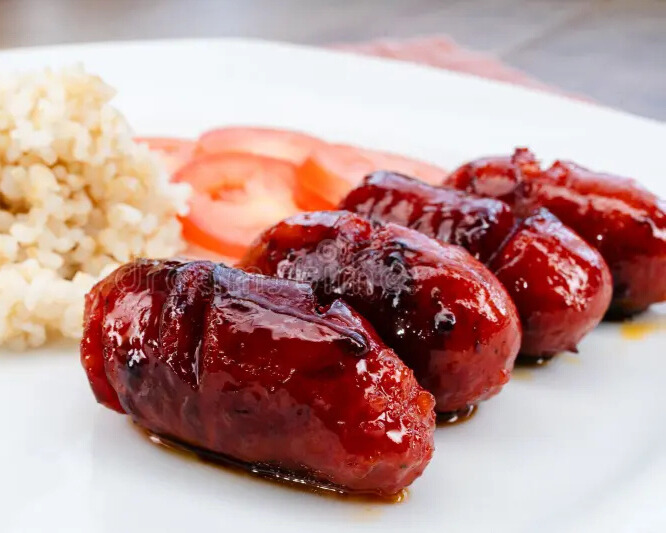
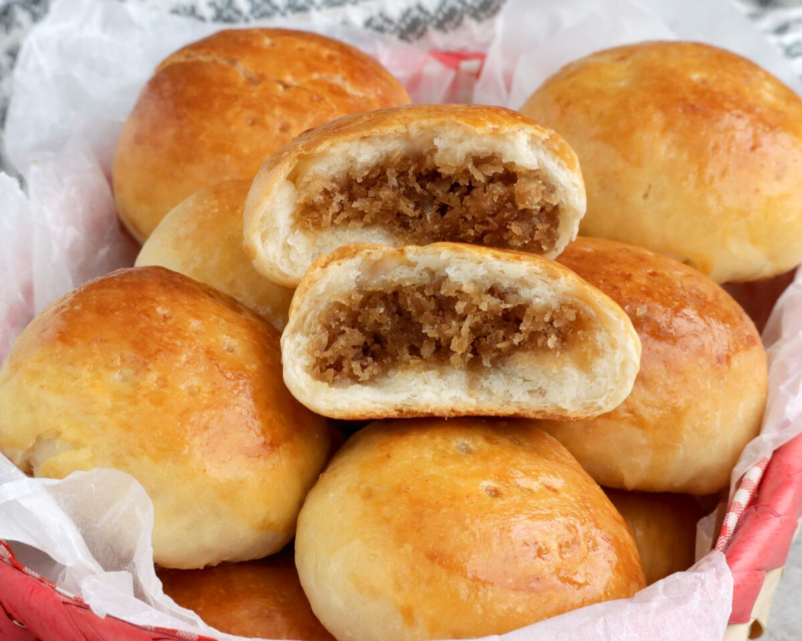
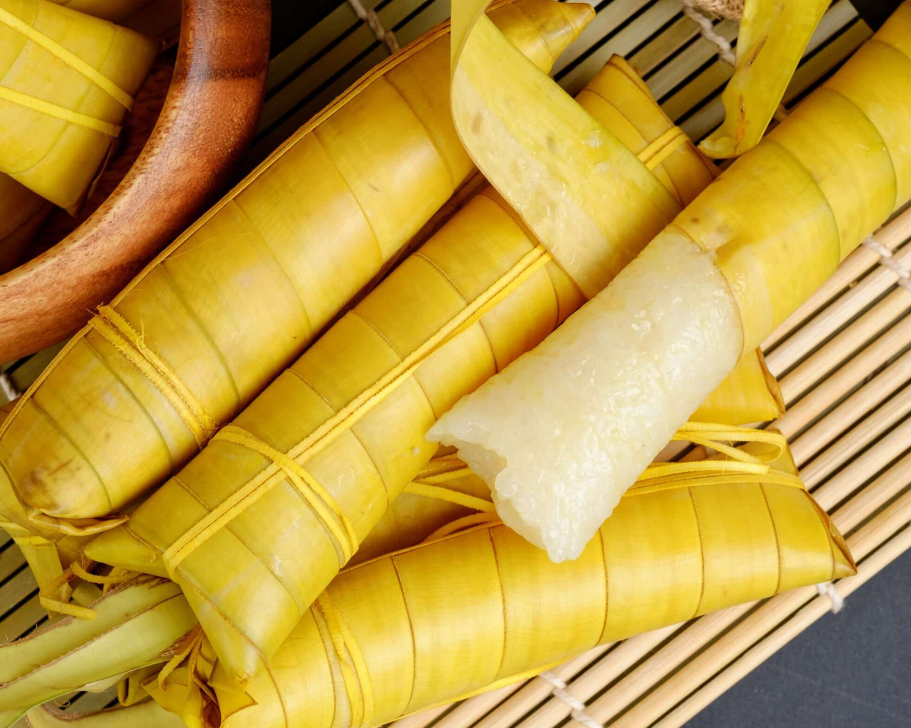

A classic Filipino breakfast with marinated beef (tapa), garlic fried rice (sinangag), and fried egg (itlog).

Fried dried fish (danggit), garlic rice, and egg – a coastal staple, especially popular in island towns.

Fluffy pancakes made with coconut milk and sometimes topped with grated coconut and tropical fruits.

Grilled eggplant dipped in beaten egg and fried, served with rice and spicy vinegar.

Savory rice porridge made with chicken or fish, ginger, and sometimes topped with boiled egg and fried garlic.

A chilled tropical bowl of coconut milk, chia seeds, and fruits — energy-boosting and refreshing.

Sweet and garlicky Filipino-style sausage, often served with garlic rice and a sunny-side-up egg, a beloved breakfast treat in the island.

Soft Filipino bread rolls filled with sweet, grated coconut and sugar. A perfect snack or breakfast treat that embodies the island flavor.

A sweet, sticky rice delicacy cooked in coconut milk and wrapped in banana leaves, often enjoyed as a breakfast or snack.